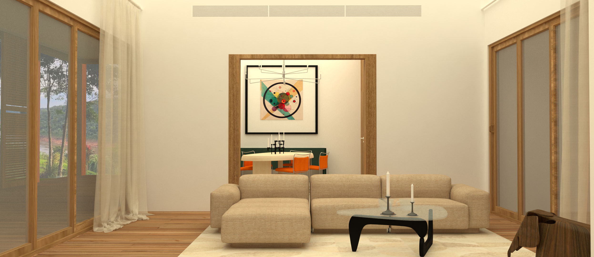
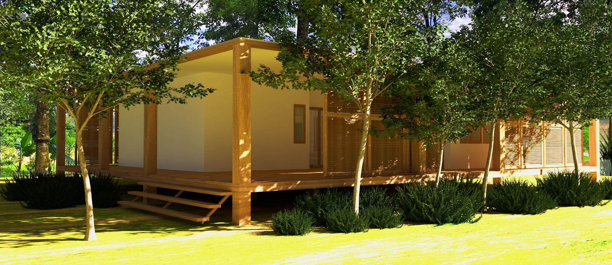
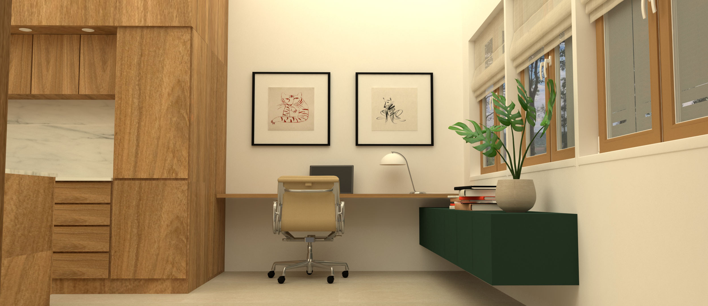
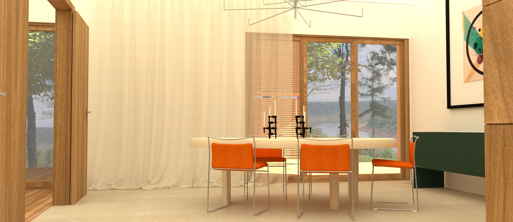
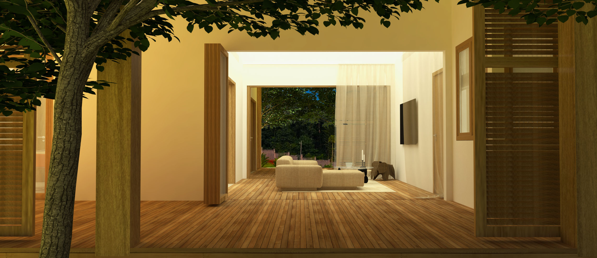
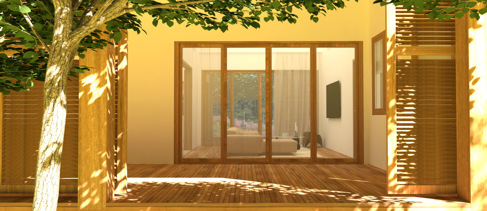
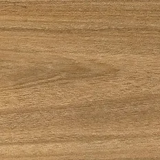
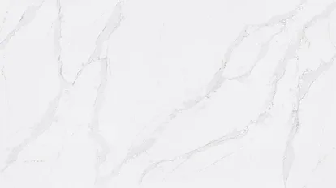

<!DOCTYPE html>
<html lang="en">
    <head>
        <meta charset="UTF-8">
        <meta http-equiv="X-UA-Compatible" content="IE=edge">
        <meta name="viewport" content="width=device-width, initial-scale=1.0">
        <title>Isa ID - Sustainable Living</title>
        <link rel="shortcut icon" href="../assets/img/logo-im.png">
        <link rel="stylesheet" href="../css/style.css">
    </body>
        <header>
            <div>
                <a href="../index.html"></a>
            </div>
            <nav>
                <ul class="navBar">
                    <li><a href="../index.html">Home</a></li>
                    <li><a href="./projects.html">Projects</a></li>
                    <li><a href="./about-me.html">About Me</a></li>
                    <li><a href="./contact.html">Contact</a></li>
                </ul>
            </nav>
        </header>
        <main class="mainProjects">
            <section>
                <div class="titlePr gridSL">
                    <div>
                        <h3>How to create a sustainable home for the Puerto Iguazú area</h3>
                    </div>
                    <!-- <div>
                        
                    </div>
                    <div>
                        <h3>New Priorities</h3>
                        <p>Nowadays, it becomes more and more essential that a house is built in a sustainable way. This means a change of approach, not only for architecture, but also for interior design. In times of rapid consumption and changing trends, it is important to create a timeless, durable and quality interior so that the consumption of new furniture is reduced</p>
                    </div>
                    <div>
                        
                    </div>
                    <div>
                        
                    </div>
                    <div>
                        <h3>Architecture</h3>
                        <p>Due to the fact that the city of Puerto Iguazú is located within the subtropical climatic zone, a large covered porch with parasols that protect from solar radiation was implemented. Additionally, the house was raised to create a draft under the house to cool it down. In addition, there is cross ventilation in each room. The living room in this case, serves as an air corridor and allows to cool the house.</p>
                    </div>
                    <div>
                        <h3>Native Materials</h3>
                        <p>An extremely important element in the interior design was the use of native materials. The vast majority of the wooden elements in the house is petiribí. A wood that is found in abundance in the northern area of Argentina. Silestone was used for the kitchen countertop, a sustainable alternative to marble. <br> We worked with curtains that, on one hand, serve to protect from the sun and, on the other hand, give texture to the interior. Although beige was used for the most part, the focus was on the different materials and fabrics that together create a tactile experience. </p>
                    </div>
                    <div>
                        
                    </div>
                    <div>
                        
                    </div>
                    <div>
                        
                    </div>
                    <div>
                        
                    </div>
                    <div>
                        
                    </div>
                    <div>
                        
                    </div> -->
                </div>
            </section>
            <div class="backButton">
            <a class="aBackButton" href="./texture.html"><p>Back</p></a>
            </div>
        </main>
        <footer>
            <a href="../index.html"></a>
            <div>
                    <p>Social Network:</p>
                    <a href="https://www.instagram.com/isabellemallwitz.id/" target="_blank"></a>
                    <a href="https://www.linkedin.com/in/isabelle-mallwitz-557b0b14b/" . target="_blank"></a>
            </div>
        </footer>
    </body>
</html>